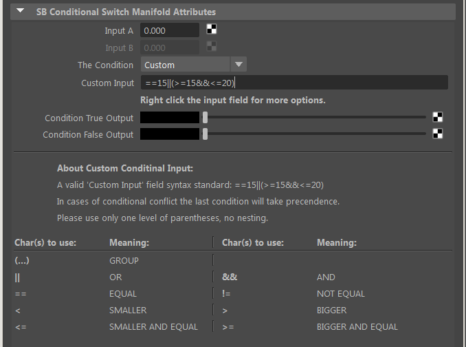

sbConditionalSwitchM |
|
VERSION 1.1 |
•Added 2 more conditions to the drop menu - not equal "!=" and "Custom". The latter gives you the possibility to manually enter more complicated conditions which will be evaluated at run time. An example for a custom input can be: ==15||(>=15&&<=20).  |
VERSION 1.0 |
•A conditional node that will output the true or false manifold inputs depending on the condition you select and according to Input A and Input B. |
Ethan's RFM Enhancement Pack is a property of Ethan Phoenix.
All Rights Reserved © Ethan Phoenix. For personal use only. Commercial use is prohibited. Not for redistribution without permission.